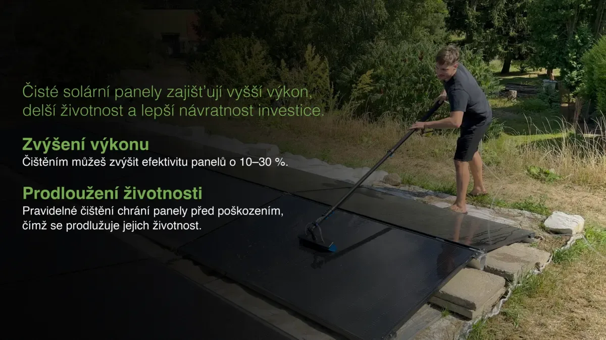

- Role
- Struktura sdělení a střih
- Formáty
- 16:9, vertikál, tisk
- Claim
- Produkční výstup, bez metrik
Situace
Technické vlastnosti samy o sobě neprodávají. Výstup musel lidem ukázat, proč služba dává smysl, a zároveň fungovat v několika odlišných formátech.
Moje role
Strukturoval jsem argumenty, sestavil a editoval vysvětlující video, připravil sociální adaptaci a podpořil komunikaci tiskovou rodinou.
Výstupy
- Hlavní vysvětlující video.
- Krátký mobilní výřez.
- Čtyřdílná tisková série.
- Poster frames a prezentační podklady.

Co to dokazuje
Schopnost najít srozumitelný zákaznický argument a udržet ho konzistentní napříč pohyblivým obrazem, mobilem a tiskem.
Podobný problém
Máte dobrou technickou službu, ale lidé potřebují příliš mnoho vysvětlování, než pochopí její hodnotu? To je problém framingu, ne jen designu.